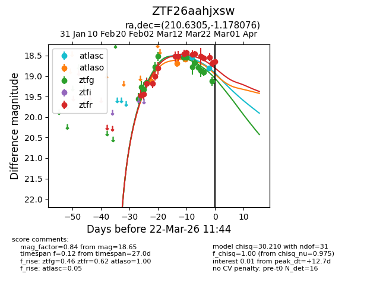
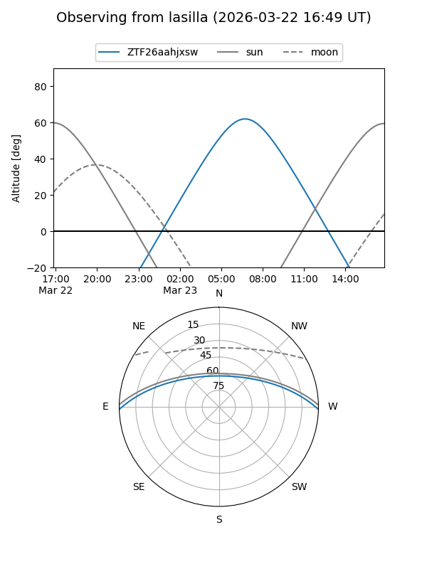
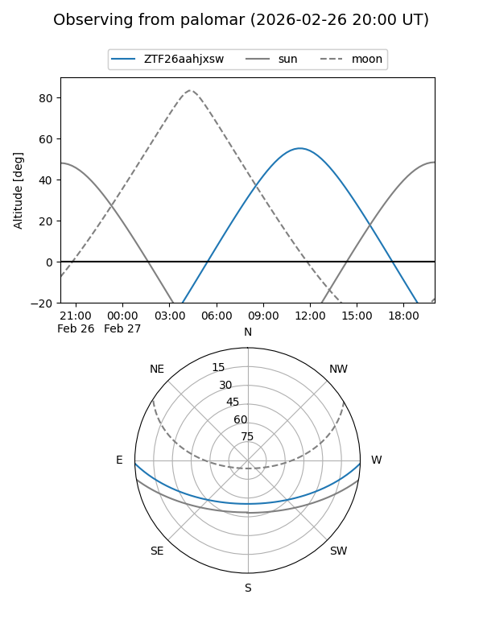
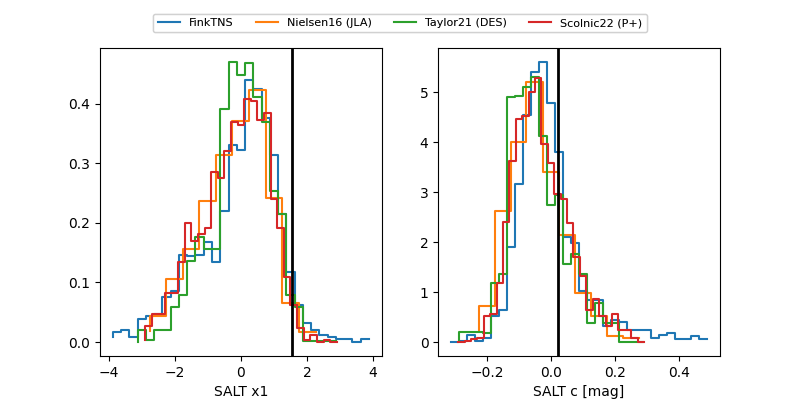

ZTF26aahjxsw
Target ZTF26aahjxsw at 2026-03-22 11:46
Aliases and brokers:
FINK: link
Lasair: link
ALeRCE: link
alt names
ZTF26aahjxsw (ztf,fink_ztf)
Coordinates:
equatorial (ra, dec) = 210.6305,-1.17808
equatorial (HMS+DMS) = 14:02:31.31,-01:10:41.07
galactic (l, b) = (336.9301,+56.92610)
Flags:
Photometry:
last atlasc=18.80, atlaso=18.58, ztfg=19.13, ztfr=18.65
2 atlasc, 3 atlaso, 14 ztfg, 17 ztfr detections
Lightcurve

Visibility


Additional plots
